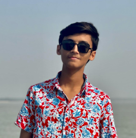

Madni Sabtain

Summary
My objective is to become a better programmer and web developer. I am pursuing this field because of my passion to become an ethical hacker and to further pursue cyber security.
Education
- Memorized The Holy Quran from Masjid Al-Nabvi, Madinah, KSA in Q2 2020.
- Matriculation from Laureate Group of Schools Multan in Q2 2023.
- Started intermediate education in Nishat College Multan in Q3 2023 and currently studying that while also learning to code.
Work Experiences
- I have no professional work experiences as I am currently working for it.
- The work responsibilities I have for now are taking care of household chores and groceries.
Skills
- Programming.
- Good learning skills.
Contact Hobbies